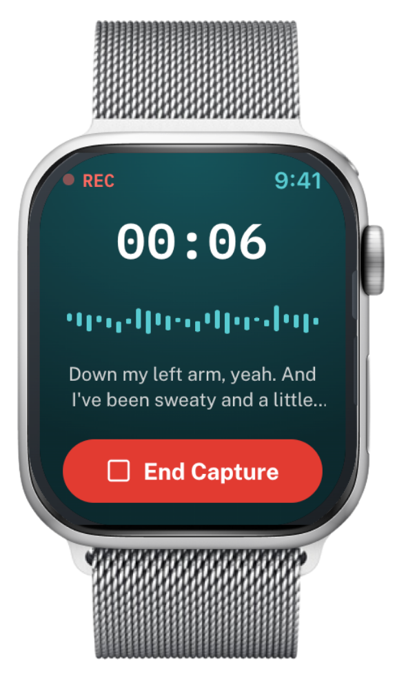

Documentation from the wrist, in real time
Core Mobile harnesses the Apple Watch for voice-driven clinical documentation — pre-hospital clinicians and providers care for patients and complete documentation at the same time. The solution also integrates with medical devices like monitors and wearables, so patient data is automatically populated into the documentation in real time.

Captured once, flowing everywhere it's needed
Real-time transcription of conversations, encounters, and clinical observations into structured documentation.
Real-time speech recognition for hands-free dictation directly into mobile or desktop workflows.
Automated extraction of relevant clinical data from voice notes, ambient recordings, and free-text entries.
Voice commands input data directly into the EHR, reducing manual entry and minimizing errors.
Concise, relevant summaries for handoffs, referrals, and follow-ups — less redundant documentation, better continuity.
Evidence-based clinical pathway recommendations tailored to each patient's profile and history.
Automated order-set generation from clinical guidelines and patient-specific data — less time on manual order entry.
Detailed notes generated from transcriptions, history, meds, labs, and vitals — with auto-complete suggesting terms and phrases.
Efficient creation and updating of clinical flowsheets, accessible to the whole care team.
Accurate clinical notes by voice command — including navigation through complex pre-established forms and notes.
Integrates with most clinical systems, including Epic, Cerner, Meditech, and VistA CPRS.
Ingest scanned documents, PDFs, and faxes — AI extracts the clinical content and integrates it into the patient record.
14 months of paper charting, done in 16 weeks
Structured, AI-assisted documentation doesn't just save minutes per note — it compresses whole research and reporting timelines.
"The initial study using paper charting took in total about 14 months to complete. Whereas the same study using Core Mobile software took about 16 weeks to complete and present at a conference."